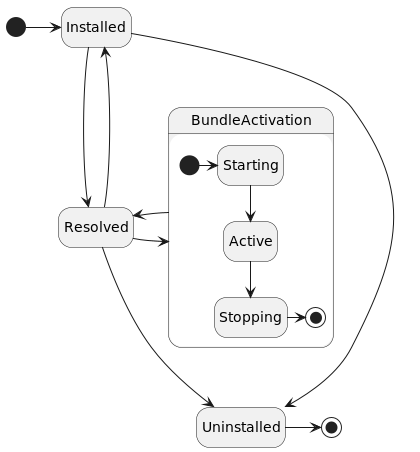

An Apache Celix Bundle contains a collection of shared libraries, configuration files and optional an activation entry combined in a zip file. Bundles can be dynamically installed and started in an Apache Celix framework.
Technically an Apache Celix Bundle is a zip file with the following content:
If a jar command is available the Celix CMake commands will use that (instead of the zip command) to create bundle
zip files so that the MANIFEST.MF is always the first entry in the zip file.
#unpacking celix_shell_wui.zip bundle file from a cmake build `cmake-build-debug`.
#The celix_shell_wui.zip file is the Celix Shell Web UI bundle. Which provides a web ui interface to the Celix
#interactive shell; It contains a manifest file, shared libraries, and additional web resources
#which can be picked up by the `Celix::http_admin` bundle.
% unzip cmake-build-debug/bundles/shell/shell_wui/celix_shell_wui.zip -d unpacked_bundle_dir
% find unpacked_bundle_dir
unpacked_bundle_dir
unpacked_bundle_dir/resources
unpacked_bundle_dir/resources/index.html
unpacked_bundle_dir/resources/ansi_up.js
unpacked_bundle_dir/resources/script.js
unpacked_bundle_dir/META-INF
unpacked_bundle_dir/META-INF/MANIFEST.MF
unpacked_bundle_dir/libcivetweb_shared.so #or dylib for OSX
unpacked_bundle_dir/libshell_wui.1.so #or dylib for OSX
An Apache Celix Bundle has its own lifecycle with the following states:

Bundles can be installed and started dynamically. When a bundle is started it will be activated by looking up the bundle
activator entry points (using dlsym). The entry points signatures are:
celix_status_t celix_bundleActivator_create(celix_bundle_context_t *ctx, void **userData):
Called to create the bundle activator.celix_status_t celix_bundleActivator_start(void *userData, celix_bundle_context_t *ctx):
Called to start the bundle.celix_status_t celix_bundleActivator_stop(void *userData, celix_bundle_context_t *ctx):
Called to stop the bundle.celix_status_t celix_bundleActivator_destroy(void *userData, celix_bundle_context_t* ctx):
Called to destroy (free mem) the bundle activator.The most convenient way to create a bundle activator in C is to use the macro CELIX_GEN_BUNDLE_ACTIVATOR defined in
celix_bundle_activator.h. This macro requires two functions (start,stop), these function can be static and
use a typed bundle activator struct instead of void*.
For C++, the macro CELIX_GEN_CXX_BUNDLE_ACTIVATOR defined in celix/BundleActivator.h must be used to create a
bundle activator. For C++ a RAII approach is used for bundle activation.
This means that a C++ bundle is started by creating a bundle activator object and stopped by
letting the bundle activator object go out of scope.
A bundle can interact with the Apache Celix framework using a bundle execution context or bundle context in short. The bundle context provides functions/methods to:
The hello world bundle example is a simple example which print a “Hello world” and “Goodbye world” line when starting / stopping the bundle.
Knowledge about C, C++ and CMake is expected to understand the examples.
The C and C++ examples exists of a single source file which contains the bundle activator and some Apache Celix CMake commands to create a bundle and a container.
Both containers example uses 3 bundles: the Apache Celix Shell bundle, the Apache Celix Shell Textual UI bundle and the Hello World bundle. The Apache Celix Shell bundle provides a set of interactive shell commands and the Apache Celix Shell Textual UI bundle can be used to run these command from a console terminal.
When the C or C++ Hello World bundle example container is started, the following commands can be used to dynamically stop and start the Hello World bundle.
stop 3 #Stopping the Hello World bundle. Note that the Hello World is the third bundle, so it will get a bundle id 3.
start 3 #Starting the Hello World bundle again.
uninstall 3 #Stoping and uninstalling the Hello World bundle.
stop 0 #stop the Apache Celix framework
The see what other Apache Celix shell commands are available run the celix::help command:
help #note can also be triggered with celix::help (the fully qualified command name).
help celix::start
help celix::lb
stop 0 #stop the Apache Celix framework
//src/my_bundle_activator.c
#include <celix_api.h>
typedef struct my_bundle_activator_data {
/*the hello world bundle activator struct is empty*/
} my_bundle_activator_data_t;
static celix_status_t my_bundle_start(my_bundle_activator_data_t *data, celix_bundle_context_t *ctx) {
printf("Hello world from bundle with id %li\n", celix_bundleContext_getBundleId(ctx));
return CELIX_SUCCESS;
}
static celix_status_t my_bundle_stop(my_bundle_activator_data_t *data, celix_bundle_context_t *ctx) {
printf("Goodbye world\n");
return CELIX_SUCCESS;
}
CELIX_GEN_BUNDLE_ACTIVATOR(my_bundle_activator_data_t, my_bundle_start, my_bundle_stop)
#CMakeLists.txt
find_package(Celix REQUIRED)
#With `make all`, `make celix-bundles` this bundle will be created at:
# ${CMAKE_CURRENT_BINARY_DIR}/my_bundle.zip.
add_celix_bundle(my_bundle
VERSION 1.0.0
SOURCES src/my_bundle_activator.c
)
#With `make all`, `make celix-containers` or `make my_container` this Celix container executable will be created at:
# ${CMAKE_BINARY_DIR}/deploy/my_container/my_container
add_celix_container(my_container
C
BUNDLES
Celix::shell
Celix::shell_tui
my_bundle
)
//src/MyBundleActivator.cc
#include <iostream>
#include "celix/BundleActivator.h"
class MyBundleActivator {
public:
explicit MyBundleActivator(const std::shared_ptr<celix::BundleContext>& ctx) {
std::cout << "Hello world from bundle with id " << ctx->getBundleId() << std::endl;
}
~MyBundleActivator() noexcept {
std::cout << "Goodbye world" << std::endl;
}
};
CELIX_GEN_CXX_BUNDLE_ACTIVATOR(MyBundleActivator)
#CMakeLists.txt
find_package(Celix REQUIRED)
#With `make all`, `make celix-bundles` this bundle will be created at:
# ${CMAKE_CURRENT_BINARY_DIR}/MyBundle.zip.
add_celix_bundle(MyBundle
SOURCES src/MyBundleActivator.cc
)
#With `make all`, `make celix-containers` or `make MyContainer` this Celix container executable will be created at:
# ${CMAKE_BINARY_DIR}/deploy/my_container/MyContainer
add_celix_container(MyContainer
CXX
BUNDLES
Celix::ShellCxx
Celix::shell_tui
MyBundle
)
By design bundles cannot directly access the symbols of another bundle. Interaction between bundles must be done using
Apache Celix services. This means that unless functionality is provided by means of an Apache Celix service,
bundle functionality is private to the bundle.
In Apache Celix symbols are kept private by loading bundle libraries locally (dlopen with RTLD_LOCAL).
Apache Celix bundles can be installed on the system with the Apache Celix CMake command install_celix_bundle.
Bundles will be installed as zip files in the package (default the CMAKE_PROJECT_NAME) share directory
(e.g /use/share/celix/bundles).
It is also possible to use Apache Celix bundles as CMake imported targets, but this requires a more complex CMake installation setup.
The install_celix_targets can be used to generate a CMake file with the imported Apache Celix Bundle CMake targets
and this is ideally coupled with a CMake config file so that the bundles are made available when
CMake’s find_package is used.
Example:
#Project setup
project(ExamplePackage C CXX)
find_package(Celix REQUIRED)
#Create bundles
add_celix_bundle(ExampleBundleA ...)
add_celix_bundle(ExampleBundleB ...)
#Install bundle zips
install_celix_bundle(ExampleBundleA EXPORT MyExport)
install_celix_bundle(ExampleBundleB EXPORT MyExport)
#install exported Celix CMake targets
install_celix_targets(MyExport NAMESPACE ExamplePackage:: DESTINATION share/ExamplePackage/cmake FILE CelixTargets)
#Install Package CMake configuration
file(GENERATE OUTPUT ${CMAKE_BINARY_DIR}/ExamplePackageConfig.cmake CONTENT "
# relative install dir from lib/CMake/ExamplePackage.
get_filename_component(REL_INSTALL_DIR "${CMAKE_CURRENT_LIST_FILE}" PATH)
get_filename_component(REL_INSTALL_DIR "${REL_INSTALL_DIR}" PATH)
get_filename_component(REL_INSTALL_DIR "${REL_INSTALL_DIR}" PATH)
get_filename_component(REL_INSTALL_DIR "${REL_INSTALL_DIR}" PATH)
include(${REL_INSTALL_DIR}/share/celix/cmake/CelixTargets.cmake)
")
install(FILES
${CMAKE_BINARY_DIR}/ExamplePackageConfig.cmake
DESTINATION ${CMAKE_INSTALL_LIBDIR}/cmake/ExamplePackage)
Downstream Usage Example:
project(UsageExample C CXX)
find_package(Celix REQUIRED)
find_package(ExamplePackage REQUIRED)
add_celix_container(test_container BUNDLES
Celix::shell
Celix::shell_tui
ExamplePackage::ExampleBundleA
ExamplePackage::ExampleBundleB
)
See Apache Celix CMake Commands for more detailed information.
celix::lb shell commandTo interactively see the installed bundles the celix::lb shell command (list bundles) can be used.
Examples of supported lb command lines are:
celix::lb - Show an overview of the installed bundles with their bundle id, bundle state, bundle name and
bundle group.lb - Same as celix::lb (as long as there is no colliding other lb commands).lb -s - Same as celix::lb but instead of showing the bundle name the bundle symbolic name is printed.lb -u - Same as celix::lb but instead of showing the bundle name the bundle update location is printed.